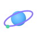
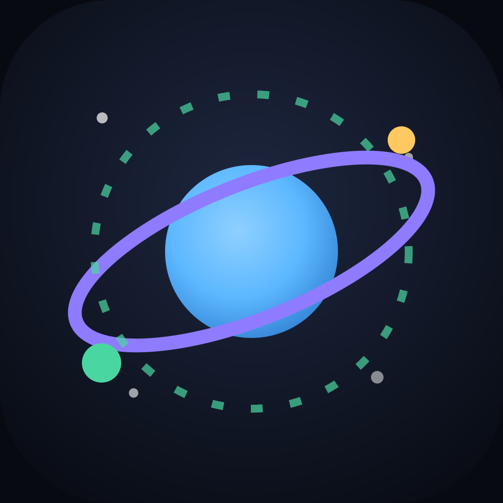
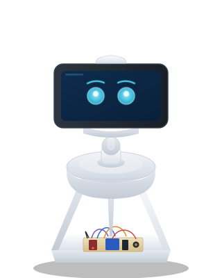
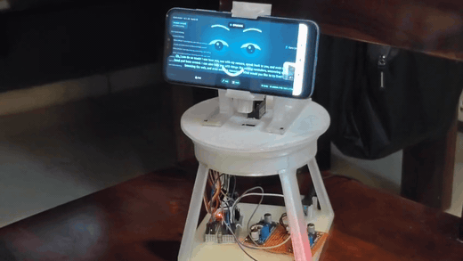
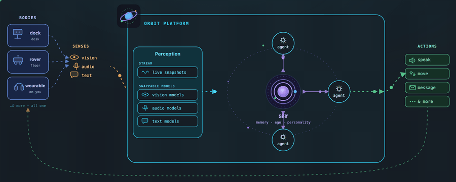
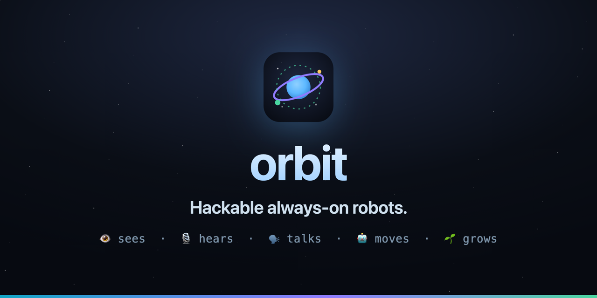

Every logo, illustration, icon, and piece of media in the repo — rendered, named, and captioned with what it is and where to use it. Open this file in a browser. Paths are relative to the repo root.
The orbit mark in its variants, plus the matching self badge. The planet-with-orbit-ring is the core identity; use the badge for app tiles, the mark/mono for inline UI, the favicon for tabs.


A vector illustration of the desk companion, drawn from the hero photo — phone-face with cyan eyes, servo neck, printed tripod base, exposed electronics. Scales cleanly, works on light or dark.

The README media. Both animate as GIFs (embed reliably on GitHub) and have crisp MP4s alongside. The architecture diagram also ships as a live animated HTML source.


The hand-drawn line-icons used across the architecture diagram. All use stroke="currentColor" — set the surrounding text color to theme them. Shown here in cyan.
Note: the icons above are loaded as <img>, so currentColor shows as their file default. Inline them in HTML (or set fill/stroke) to recolor. Full list & usage: docs/media/icons/README.md.
Social preview card
The 1280×640 card for GitHub’s repo social preview. Set it under repo Settings → General → Social preview (manual upload — GitHub doesn’t read it from the repo).
